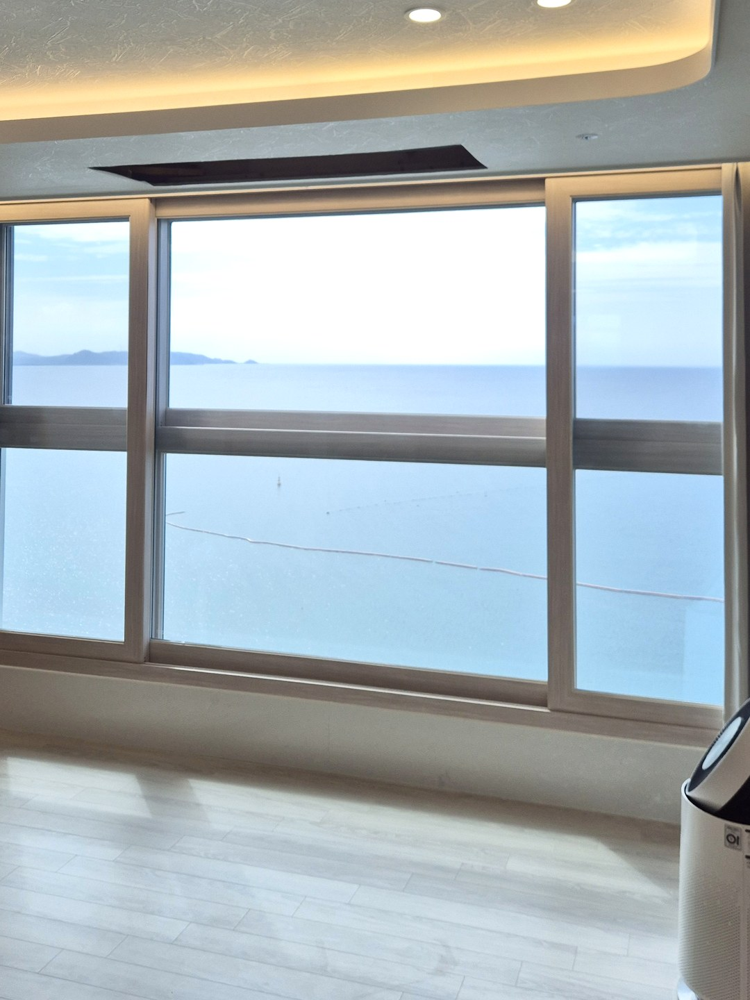
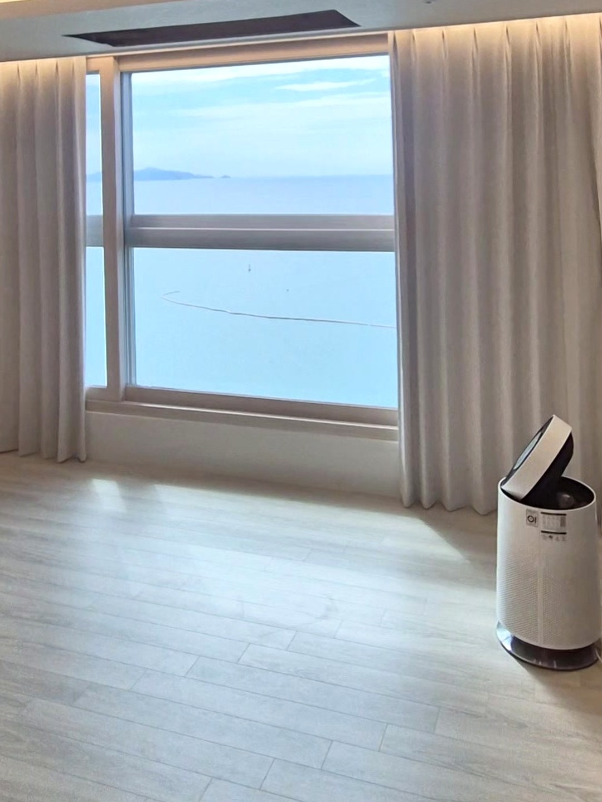
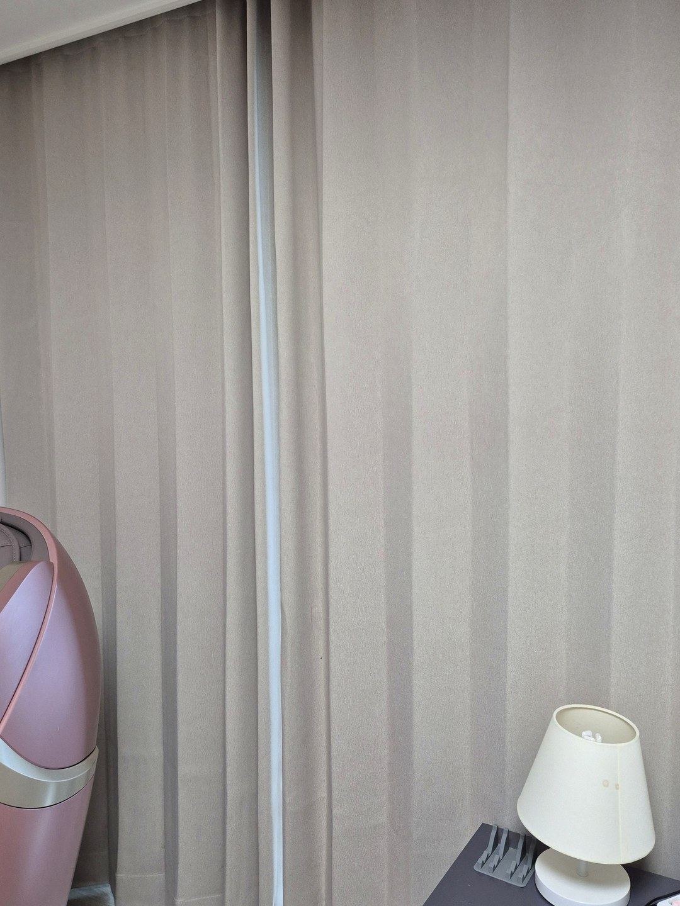
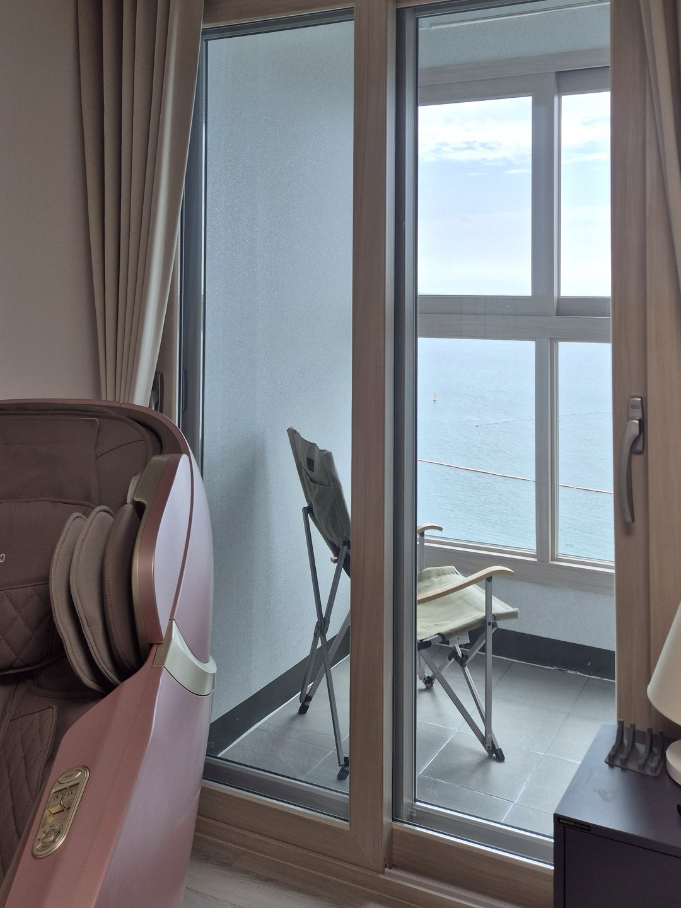

2026년 10월 1일 시공
울진 후포 오션더캐슬
거실 전동커튼 · 안방 암막커튼 시공후기

울진 후포의 주상복합 오션더캐슬에서 진행한 커튼 시공입니다.
거실은 모터로 여닫는 전동커튼, 안방은 빛을 막는 암막커튼으로 구성했습니다.
이 현장은 다른 업체에서 시공을 의뢰해 주셨습니다.
거실 — 넓은 바다 창과 전동 레일

거실 창은 벽 한 면을 거의 다 차지할 만큼 넓고, 그 너머로 수평선이 그대로 보입니다.
조망이 좋은 창은 평소에 열어 두다가 필요할 때만 닫기 때문에 여닫는 횟수가 많습니다.
폭이 넓은 커튼을 매번 손으로 끌기는 부담스러워서, 이런 창에 전동 레일이 제 몫을 합니다.

작동시키면 좌우 커튼이 동시에 출발해 창 가운데에서 만납니다.
사람 손으로 당길 때 생기는 쏠림이 없어서 주름 간격이 일정하게 유지됩니다.
원단은 마루와 벽에 맞춘 베이지 계열이고, 커튼박스 안쪽 간접조명이 닫힌 커튼 위를 부드럽게 비춥니다.
안방 — 발코니 창에 암막커튼

안방 창도 바다를 향해 있습니다.
맞은편에 건물이 없는 창은 해가 뜨면 빛이 곧바로 방 안으로 들어옵니다.
잠자는 방이어서 이 창에는 암막커튼을 선택했습니다.

이 창은 발코니로 드나드는 문 역할도 합니다.
걷은 커튼이 문 앞을 막지 않도록, 양옆 벽까지 레일을 여유 있게 잡았습니다.
묶어 두면 창이 온전히 드러나 낮 동안 조망을 가리지 않습니다.
미리 알려 드리는 것
전동커튼은 모터에 전기를 공급해야 움직입니다.
레일 근처에 전원이 없으면 선을 끌어와야 하고, 그 선이 눈에 보일 수 있습니다.
새로 입주하시거나 인테리어를 하실 때 커튼박스 쪽에 전원을 미리 마련해 두시면 가장 깔끔합니다.
살고 계신 집이라면 실측 때 전원 위치를 먼저 확인하고, 선을 어디로 돌릴지 함께 정합니다.
전원 사정이 맞지 않는 창은 손으로 여닫는 레일이 더 나은 선택일 수 있습니다.
울진 커튼·블라인드 상담
창 전체가 나오는 사진과 대략적인 폭·높이를 보내 주십시오.
전동으로 할 창과 일반 레일로 충분한 창을 나눠서 제안해 드립니다.
울진은 경북 담당 실장이 직접 설치합니다.